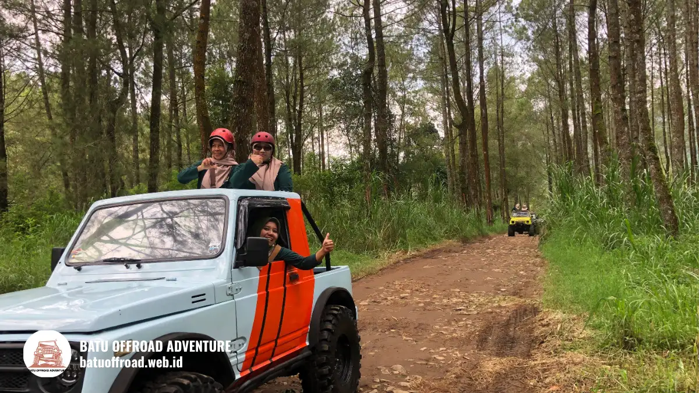

Rute ke Coban Putri Cerita Perjalanan Tim Batu Offroad
Rute ke Coban Putri dari pusat Batu melewati jalan kota lalu jalur menanjak menuju Tlekung. Batu Offroad merangkum jalur, titik rawan, dan jam berangkat yang kami sarankan untuk rombongan.
Jawaban Cepat: Dari Titik Awal ke Lokasi
Panduan wisata Orami (2023) menyebut jarak dari Alun-alun Kota Wisata Batu ke Coban Putri sekitar 8 km ke arah selatan, dengan estimasi waktu tempuh sekitar 20 sampai 30 menit berkendara normal. Motor, mobil pribadi, shuttle, dan kendaraan offroad dapat menjangkau kawasan ini. Kami menyarankan berangkat pagi agar waktu tempuh lebih terkendali.
Titik Awal dan Pilihan Jalur
Titik awal yang paling umum adalah Alun-alun Kota Wisata Batu. Orami (2023) mencatat jalurnya melewati Jalan Sudiro, Jalan WR Supratman, Jalan Stadion Utara, Jalan Stadion Barat, Jalan Abdul Gani Atas, dan Jalan Langsep menuju kawasan Tlekung.
Dari Kota Malang, rute berbeda dan waktu tempuhnya dapat lebih panjang saat jam sibuk (sekitar 45-60 menit via jalur Dau atau jalur utama Karanglo-Batu). Untuk peserta yang datang dari Bandara Abdul Rachman Saleh atau Stasiun Malang, jarak berkisar 25-30 km dengan estimasi 1 hingga 1,5 jam menuju titik kumpul basecamp kami di Temas. Untuk rombongan besar, kami mengatur satu titik kumpul agar pergerakan lebih rapi.
Catatan Perjalanan Survei Tim Kami
Berdasarkan survei rute terbaru tim Batu Offroad Adventure:
- Titik Awal: Basecamp Batu Offroad di Temas / Alun-alun Kota Batu.
- Jam Berangkat Ideal: Pukul 07.30 - 08.30 WIB untuk menghindari antrean lalu lintas pagi.
- Landmark Penting: Kawasan Stadion Gelora Brantas, simpang Kusuma Agro / Abdul Gani Atas, gapura perbatasan Desa Tlekung, serta jalur persimpangan menuju area Coban Rais & Coban Putri.
- Kondisi Jalan: Aspal mulus di awal, diikuti jalan beraspal sedang dan jalan makadam yang mulai menanjak saat memasuki area perbukitan.

Jeep offroad melintasi kawasan hutan dan tanjakan alami menuju Coban Putri
Kondisi Jalan dan Titik Rawan
Ada beberapa titik yang perlu diwaspadai sepanjang rute:
- Tanjakan curam: Tanjakan di jalur Abdul Gani Atas arah Tlekung dapat menguji performa kendaraan dengan muatan penuh. Pastikan kendaraan dalam kondisi prima.
- Jalur sempit: Beberapa ruas jalan menuju area parkir coban memiliki lebar terbatas, membuat kendaraan besar harus berjalan pelan dan bergantian saat berpapasan.
- Kemacetan akhir pekan: Akhir pekan dan hari libur nasional menjadi waktu paling padat, terutama di sekitar persimpangan Oro-oro Ombo dan akses Alun-alun Batu karena keterbatasan kantong parkir (Jurnal UMM).
- Jalan licin saat hujan: Saat hujan turun, permukaan jalan tanah dan bebatuan di area wisata menjadi licin. Pengemudi disarankan menjaga jarak aman dan menurunkan kecepatan.
Akses Motor, Mobil Pribadi, dan Bus
Motor dan mobil pribadi dapat menjangkau area parkir utama dekat lokasi Coban Putri. Namun, kapasitas parkir dapat cepat penuh pada jam-jam ramai akhir pekan.
Untuk bus rombongan berukuran besar (medium bus & big bus), sangat disarankan untuk menurunkan penumpang di titik temu atau kantong parkir yang disepakati (seperti rest area terdekat atau basecamp kami di Temas), lalu melanjutkan perjalanan menggunakan armada shuttle atau jip 4x4. Koordinasikan jadwal kedatangan bus rombongan Anda dengan tim kami terlebih dahulu.
Jam Berangkat yang Disarankan
Jam operasional kunjungan Coban Putri menurut rujukan Orami (2023) dimulai pukul 09.00 WIB dan berakhir pukul 17.00 WIB. Berangkat sekitar pukul 08.00 WIB dari titik kumpul pusat kota biasanya memberi waktu sangat cukup sebelum loket ramai, dengan lalu lintas jalur yang masih lancar.
Keberangkatan siang cenderung lebih ramai dan membutuhkan waktu tempuh lebih lama karena arus wisata Batu mulai padat. Selalu konfirmasikan jadwal terbaru sebelum berangkat bersama operator Anda.
Fasilitas di Titik Awal dan Wisata di Sepanjang Jalur
Di sekitar titik awal Alun-alun Kota Wisata Batu dan jalur keberangkatan, rombongan dapat dengan mudah menemukan sentra kuliner, minimarket, ATM center, SPBU, serta masjid besar untuk persiapan logistik.
Fasilitas lengkap di lokasi meliputi area parkir, toilet umum, musholla, warung makan, dan gazebo istirahat yang kami rangkum di fasilitas Coban Putri. Sementara itu, destinasi menarik lain di koridor rute ini mencakup Jatim Park 2, Batu Night Spectacular (BNS), dan Eco Active Park.
Pertanyaan yang Sering Diajukan
-
Apakah rute ke Coban Putri mudah ditemukan dengan GPS?
Aplikasi peta seperti Google Maps umumnya membantu menemukan jalur utama secara akurat. Namun beberapa ruas jalan pedesaan bisa memiliki petunjuk kurang jelas, sehingga kami menyarankan membawa catatan rute landmark dari panduan ini. -
Kendaraan apa saja yang bisa masuk ke area Coban Putri?
Motor, mobil pribadi (sedan, LCGC, MPV, SUV), shuttle car, dan jip offroad dapat menjangkau area parkir kawasan. Untuk bus besar, jalur sempit perbukitan mengharuskan koordinasi titik jemput shuttle. -
Berapa lama waktu tempuh dari pusat Batu?
Waktu tempuh normal berkisar 20 sampai 30 menit berkendara. Durasi ini bisa bertambah pada saat puncak musim liburan atau saat hujan lebat. -
Apakah perlu memesan kendaraan khusus untuk rombongan?
Untuk rombongan besar, memesan shuttle transportasi atau jip Land Rover offroad sangat disarankan agar jadwal tidak terhambat macet dan rombongan tetap berkumpul rapi. Hubungi WhatsApp +62 812-3398-9707.
Kesimpulan Praktis
Rute ke Coban Putri relatif mudah jika berangkat pagi dan mengetahui titik rawan di jalur perbukitan. Pilih titik awal yang mudah dijangkau seluruh rombongan, dan pastikan titik turun atau parkir kendaraan besar sudah disiapkan sebelum berangkat.
Untuk jadwal keberangkatan yang sesuai dengan rombongan Anda, kirim tanggal dan jumlah orang ke WhatsApp +62 812-3398-9707. Tim Batu Offroad siap menyusun rute dan jadwal kegiatan terbaik untuk Anda.
Sumber Referensi
- Orami, "Pesona Air Terjun Coban Putri" (10 November 2023): informasi jarak dari alun-alun, rute jalan, dan jam kunjungan.
- Jurnal UMM, Studi Alun-alun Kota Wisata Batu: analisis kemacetan lalu lintas dan kapasitas parkir saat musim libur.
- Catatan survei lapangan berkala tim rute Batu Offroad Adventure 2026.